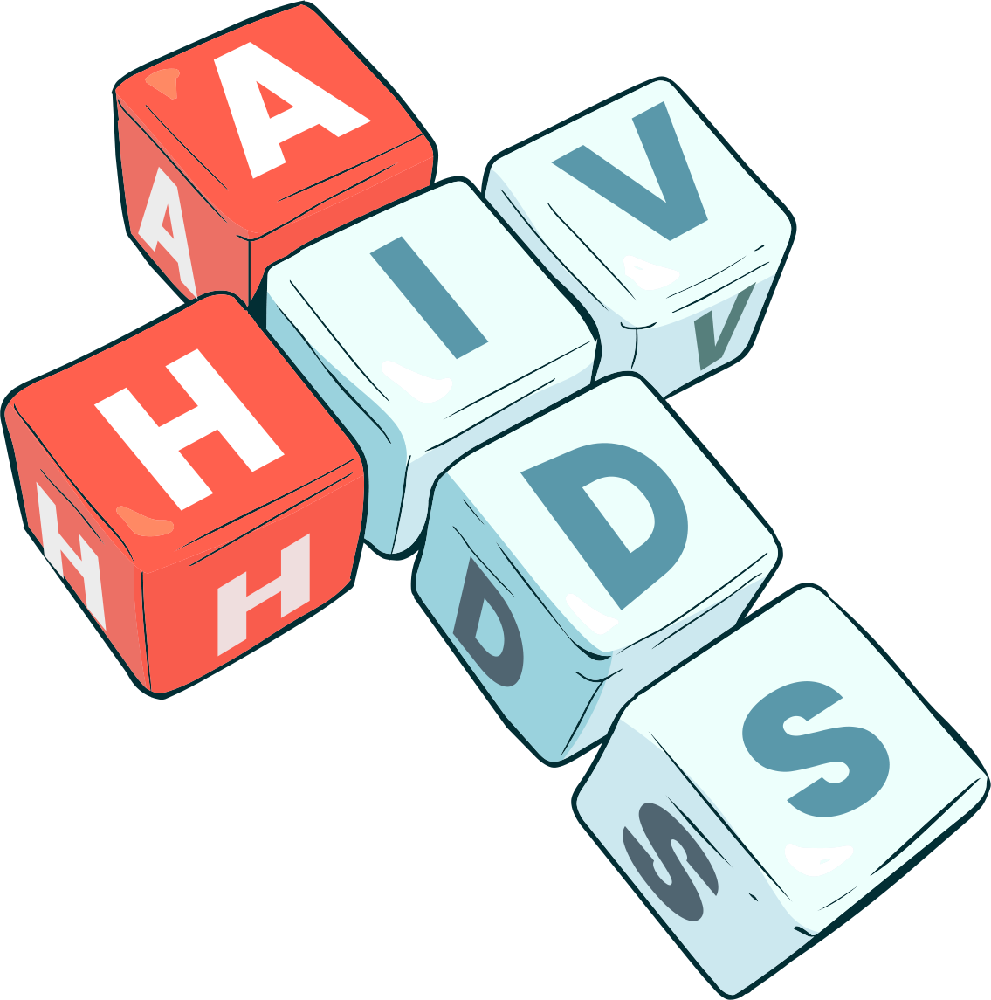

HIV/AIDS
HIV é a sigla de human immunodeficiency virus ou, em português, vírus da imunodeficiência humana. Ele ataca o sistema de defesa do organismo (sistema imunológico), principalmente os linfócitos do tipo T CD4+.
A infecção pelo HIV envolve diversas fases, com durações variáveis, que dependem da resposta imunológica do indivíduo e da quantidade de vírus no corpo da pessoa (carga viral).